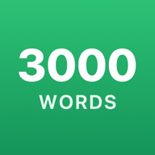

5555 слов — бесплатный тренажёр английских слов
Выучите самые употребительные английские слова: 3000 базовых и ещё 2555+ слов для продвинутых. С транскрипцией, произношением и примерами.
Начать бесплатноБез регистрации · без рекламы · работает офлайн
Почему частотные слова
Около 3000 самых частых слов покрывают подавляющую часть того, что вы читаете и слышите по-английски. Поэтому слова в приложении идут по частоте в современном английском — сначала самые нужные, а не случайный список по темам. Частота посчитана по большим корпусам текстов и субтитров (wordfreq, SUBTLEX-US).
Списки слов
Все слова приложения можно посмотреть заранее — с переводом, транскрипцией, произношением и примерами: самые употребительные английские слова по 100 на странице. Например, слова 1–100 или слова 3001–3100 для продвинутых.
Как проходит урок
Урок — 10 слов и 6 этапов, каждый тренирует слово по-своему, включая все каналы восприятия: зрение, слух, память движений. Методика использует самые современные научные данные по технологиям наилучшего запоминания.
- Изучение — слово, транскрипция, произношение, перевод и пример фразы.
- Запоминание — выбрать правильный перевод из похожих по смыслу вариантов.
- Повторение — соединить английские слова с переводами.
- Аудирование — услышать слово и собрать его из букв.
- Написание — собрать слово по переводу.
- Закрепление — написать слово на клавиатуре без подсказки из букв.
Через сутки урок нужно повторить — так слова переходят в долговременную память. Каждые 4 урока — мини-тест на скорость и точность.
Что внутри
Как установить на телефон
- iPhone и iPad: откройте 5555words.com в Safari → «Поделиться» → «На экран „Домой“».
- Android: откройте сайт в Chrome → меню → «Установить приложение» или «Добавить на главный экран».
- Mac и компьютер: Safari → «Файл» → «Добавить в Dock», или Chrome → «Установить приложение».
Вопросы и ответы
Это правда бесплатно?
Да. Все уроки, тесты и курс для продвинутых бесплатны, без рекламы и без подписки.
Нужна ли регистрация?
Нет. Приложение открывается и работает сразу, прогресс хранится на вашем устройстве.
Почему именно 3000 слов?
Около 3000 самых частотных слов покрывают подавляющую часть повседневных английских текстов и речи. Слова упорядочены по частоте в современном английском: сначала самые нужные.
Подходит ли для подготовки к IELTS и TOEFL?
Да, для словарного запаса. В словарь включены все слова списков NGSL и NAWL — базовой и академической лексики, которую используют при подготовке к IELTS и TOEFL.
Работает ли без интернета?
Да. После первого открытия приложение работает офлайн. Его можно добавить на экран «Домой» на iPhone, iPad, Android и Mac.
С какого урока начать, если я уже знаю английский?
При первом запуске выберите свой уровень от A1 до C2 — короткий тестовый урок подскажет, с какого урока начать, чтобы не повторять знакомые слова.